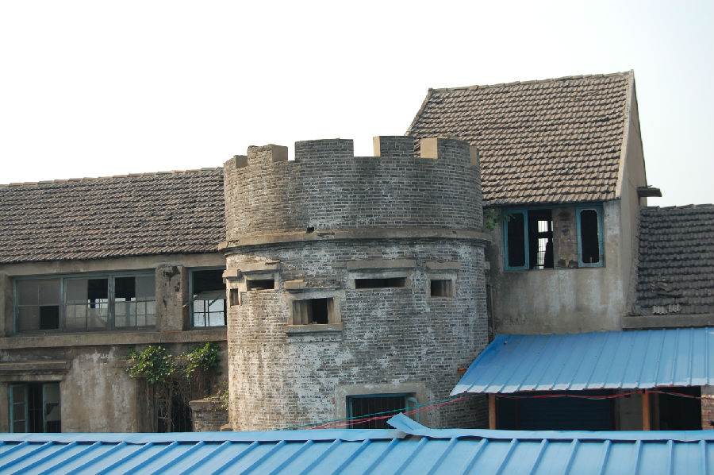

嘉兴市文物保护网 · 市级文物保护点 · 2020-11-06 · 原文

长虹村碉堡群位于嘉兴市秀洲区王江泾镇长虹村10组铁店港，为抗日战争期间日军建造，三个呈品字形分布的碉堡组成，是守卫苏嘉铁路的重要据点，总占地面积37平方米。最北面的为1号碉堡，内径3米，墙壁厚0.5米，高3.06米，可见5个射击口，射击口宽20厘米，高25厘米，其中一口略为宽大。东南侧为2号碉堡，因被周边厂房围绕无法测量具体数据，目测形制同1号，体量稍小。西南侧为3号碉堡，现改为该厂配电房，内部数据亦无法测量，高2.9米，目测形制同1号，体量为三个中最小。作为日本侵华的罪证，对于研究抗日战争史有较高的历史价值。2009年公布为嘉兴市文物保护点。